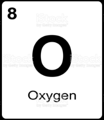

Produksi kopi di Indonesia pada tahun 2020 sebanyak 762 ribu ton, sehingga berpotensi menghasilkan limbah kulit kopi yang cukup besar.
Limbah kulit kopi saat ini dapat dijadikan sebagai biobriket. Bahan yang digunakan dalam penelitian ini yaitu kulit kopi, serbuk gergaji, daun kayu manis, air, dan tepung tapioka.
Uji karakteristik yang dilakukan yaitu kuat tekan, kadar air, volatile matter, kadar abu, nilai kalor, uji nyala api, uji aroma, dan uji keperihan.
Pembuatan biobriket menggunakan variasi kulit kopi dan serbuk gergaji. Briket A (40 g:40 g), Briket B (50 g: 30 g), Briket C (60 g: 20 g), Briket D (70 g: 10 g),
penambahan daun kayu manis, dan tepung tapioka masing-masing 5 g dan 20 g. Hasil penelitian menunjukkan bahwa nilai kalor dari biobriket menurun
dengan bertambahnya komposisi arang kulit kopi. Komposisi yang mendekati Standar Nasional Indonesia (SNI) briket arang kayu adalah Briket A dengan nilai kalor sebesar 4.650 kal/g.
Biomassa termasuk energi alternatif berasal dari limbah pertanian, perkebunan, dan sampah kota yang dapat digunakan sebagai bahan bakar. Produk bahan bakar dari biomassa contohnya biobriket. Briket banyak digunakan di industri untuk pemanasan, pengeringan, pembakaran, dan pengolahan makanan. Salah satu limbah perkebunan yang dapat dimanfaatkan sebagai bahan untuk pembuatan biobriket adalah kulit kopi.
Indonesia memproduksi kopi sebanyak 762 ribu ton (Badan Pusat Statistik Indonesia, 2020). Angka produksi kopi yang cukup besar berpotensi menghasilkan limbah yang banyak. Salah satu daerah penghasil kopi berada di kawasan Ciparay, Kabupaten Bandung. Sebagian kulit kopi di daerah Ciparay belum dimanfaatkan dengan baik sehingga menjadi limbah. Limbah kulit kopi memiliki potensi untuk dimanfaatkan sebagai bahan baku pembuatan biobriket.
Metode penelitian dilakukan secara eksperimental. Alat yang digunakan pada penilitian ini yaitu alat hidrolik, ayakan 60 mesh,
cetakan briket, furnace, oven, dan shieve shaker. Bahan yang digunakan diantaranya kulit kopi, serbuk gergaji, daun kayu manis, tepung tapioka, dan air.
Alat dan bahan yang digunakan adalah :
| No | Alat | Bahan |
| 1 | Hidrolik | Kulit Kopi |
| 2 | Ayakan | Serbuk gergaji |
| 3 | Cetakan | Daun kayu manis |
| 4 | Furnance | Tepung tapioka |
Kulit kopi, serbuk gergaji, dan daun kayu manis masing-masing dikeringkan di bawah sinar matahari selama 2 hari.
Kulit kopi dan serbuk gergaji dilakukan karbonisasi dengan penyangraian di atas kompor sebanyak 1 kg/30 menit.
Bahan yang telah di karbonisasi dan daun kayu manis kering dihaluskan kemudian di saring menggunakan ayakan lolos 60 mesh.
Tepung tapioka sebanyak 20 gr ditimbang dan dicampur dengan air sebanyak 60 ml. Campuran bahan tersebut lalu dipanaskan dan diaduk hingga homogen dan berwarna bening.
Bahan yang telah dikecilkan ukurannya selanjutnya dicampur dengan perekat.
| Komposisi Briket | Air | Kulit Kopi | Serbuk Kayu | Daun Kayu Manis |
|---|---|---|---|---|
| Briket 35 gr | 20 ml | 100 gr | 50 gr | 10 gr |
| Briket 50 gr | 30 ml | 150 gr | 75 gr | 15 gr |
| Briket 75 gr | 40 ml | 200 gr | 100 gr | 20 gr |
Tabel periodik berikut kami sajikan sebagai panduan.

Survey ini kami buat dalam bentuk form, sebagai feedback dari karya tulis ilmiah yang kami buat.
Untuk mengisi form tersebut anda bisa klik gambar di bawah ini.